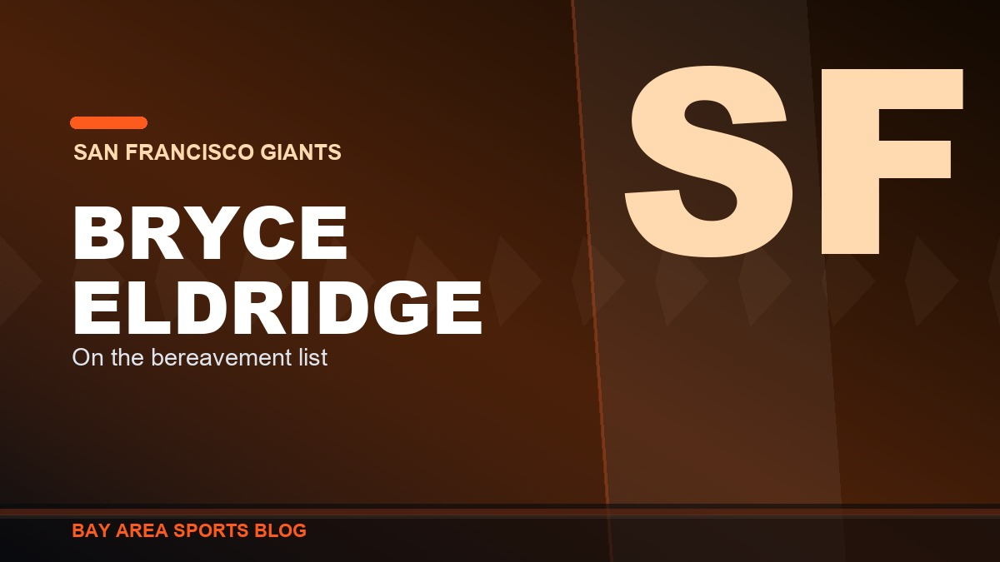

Giants
San Francisco Giants coverage, Oracle Park series notes, and lineup watch.
SFWhere the Giants season actually is
This is the Giants hub: every game recap, every column, and every argument we have had about this team since the season turned. If you want the short version of 2026, it is that the Giants spent July losing the games that decide seasons and August taking themselves apart. They went from hanging around .500 to nineteen games under it, and the front office answered the way front offices answer that.
The deadline is the spine of the story. Buster Posey had one decision to make and he made it: Luis Arraez went to Philadelphia, Robbie Ray went to the Padres, and Heliot Ramos and Tyler Mahle went out in the part of the selloff nobody talked about. What came back that matters is Marcelo Mayer for a reliever who walks everybody.
What is left to watch is the young core. Bryce Eldridge is the only future this roster has, Casey Schmitt forced his way into the lineup and stayed there, and Rafael Devers has quietly had the season nobody is discussing. The manager question is its own thread: we did not like the Tony Vitello hire and have not pretended otherwise since.
The bullpen is the other constant. If you want the pattern rather than one bad night, start with the column that called the season over. Older Giants coverage, the even-year dynasty, Bonds, the 1993 race, lives in Bay Area History. Everything current sits below.
The 2026 season and the rebuild
Three pages hold the current state of this franchise and get updated as it moves: where the rebuild actually stands after the deadline selloff, the roster and depth chart position by position, and the season game by game, which reads the year in order rather than as a pile of columns.
For the permanent stuff: how Oracle Park actually plays, the dimensions, the wind, McCovey Cove and why the park eats home runs; the even-year dynasty; Barry Bonds; and the 1993 team that won 103 and missed October. The argument about the future starts with Bryce Eldridge.
Latest in Giants

Two Hits. The Giants Got Two Hits in Pittsburgh and I Watched Every Pitch
Pirates 5, Giants 2. Blade Tidwell walked five, six Pittsburgh arms combined on a two hitter, and the season is functionally over at 58 and 83.

Giants 7, Braves 3, and I Am Not Going to Pretend I Did Not Enjoy That
Anthony Molina goes five without a walk, the bullpen throws four scoreless, and a four run sixth buries Atlanta. Five wins in the last eight.

Rafael Devers Hit Number 30 in the First Inning in Atlanta and I Would Like Some Apologies
Only the second Giant to reach 30 homers since Bonds in 2004, on a 57 win team, after a summer of being told he was soft and not a winning player.

Bryce Eldridge Went 4 for 5 With 4 RBI and Suddenly the Giants Are Fun Again
Giants 7, Diamondbacks 2 in the nightcap and the doubleheader gets split. Four hits, four driven in, and the first Giants rookie since Buster Posey in 2010 to do it.

Vitello Got Run Again, and This Time He Took Logan Webb With Him
Third inning, down four, and Tony Vitello got run for the fifth time this season. Jim Wolf threw Logan Webb out with him. Two days after the six run ninth, he did it again.

Bryce Eldridge Is Back, and Buddy Kennedy Is the One Who Paid for It
Eldridge came off the bereavement list Thursday and the Giants designated Buddy Kennedy for assignment to make room. Fourteen homers and a .346 on base at twenty one. Thirty games left and he is the only reason to watch.

Fire Tony Vitello. The Way He Runs This Bullpen Is a Travesty.
Reds 10, Giants 9 after a six run ninth. Twenty four saves in forty four chances. The same organization ran the fourth best bullpen in baseball last year. One thing changed.

They Blew a Six Run Lead in the Ninth and the Game Isn't Even Over
Nine to three going to the ninth, then Eugenio Suarez hit a grand slam. The same Suarez the manager got himself ejected screaming about in the first inning. I'm done being polite about this season.

Devers Hit His 29th Homer Today and Nobody Said a Word About It
Three straight games with a home run, 29 on the year, and he leads this club in homers and RBI by a mile. Then somebody tells me he isn't a winning player.

Vitello Got Run in the First Inning on a Check Swing, and I Am Not Even Mad
Tony Vitello got tossed in the top of the first on Wednesday for yelling get it right at a check swing call on Eugenio Suarez. Fourth ejection of his rookie year as a manager, and honestly, good.

Bryce Eldridge Is on the Bereavement List. Take the Week, Kid.
The Giants put Bryce Eldridge on the bereavement list on Monday. Nobody's said why and nobody has to. He'll be away about a week, and every other thing about this season can wait.

Giants 5, Reds 0: Shutout at Oracle
Two in the first, a Rafael Devers three run homer in the second, then six pitchers combined on a five hit shutout. 53-78.

Red Sox 5, Giants 4: Swept at Fenway
San Francisco led 3-0 before Matt Wilkinson allowed four runs in the fourth. Boston finished the sweep. 52-78.

Red Sox 3, Giants 2: Vitello Gave Away Another Ninth
Two nothing into the ninth at Fenway. Blade Tidwell threw five and two thirds scoreless, Vitello ran a spent Dylan Smith back out, and Sam Hentges gave it all back. 52-77.

Giants 1, Guardians 0: One Run Was Enough for Once
A two out Bericoto ground ball scored the only run. Houser and Dylan Smith threw seven scoreless, Smith striking out five in two. 52-74.

Guardians 8, Giants 1: Eldridge Homered and Nothing Else Happened
One run in Cleveland, and it was a 405 foot solo shot from a 21 year old. Jo Adell drove in six by himself. Whisenhunt gave up nine hits in four. 51-74.

Josuar Gonzalez Is the Best Giants Prospect in a Generation
A switch-hitting shortstop out of San Cristobal who walks more than he strikes out, runs like a scalded cat, and has already been ranked seventh in all of baseball. Finally, something to be excited about.

Vitello Called It Junior High Baseball. Posey Says He Is Back.
He is right about what he watched, and that is the problem. The man describing junior high baseball ran the game, and he is confirmed for next season.

Rockies 13, Giants 7: Devers Hit His 25th and It Did Not Matter
A seven to six lead going to the sixth. Then seven unanswered to the worst team in the National League, in our building, on a Sunday, in front of thirty two thousand people who paid to watch it.

Giants 7, Rockies 1: Logan Webb Is the Consummate Pro
Six innings, four hits, no walks, seven strikeouts, eighty pitches, and a six-run fourth behind him. The one man in that clubhouse who has never mailed in an August. 51-72.

Astros 2, Giants 1: Six Shutout Innings, One Drop, One Bad Back
Adrian Houser gave us six shutout innings on seventy-three pitches, a rookie dropped a routine fly ball in the seventh, and Willy Adames left with back spasms. 50-71.

Giants 4, Astros 1: Carson Whisenhunt Was Worth the Wait
Five and two-thirds of one-run ball from the kid, a Bryce Eldridge homer off Hunter Brown, ten outs from the bullpen with nobody past first, and win number fifty. 50-70.

Tigers 3, Giants 1 (F/10): We Wasted Eight Innings of Logan Webb
Eight innings, four hits, no earned runs, and the offence handed him one run on an infield single. Lost it in the tenth. Twenty games under .500.

Roupp Showed Up Vitello on the Mound, and That One Moment Explains This Whole Season
He walked three straight, glared at his manager, shook his head and waved him back toward the dugout. Vitello called him the exact kind of guy you want to coach. That is the entire problem.

Giants 5, Tigers 2: Devers Hit His 24th and Nobody Is Talking About the Year He Is Quietly Having
Two-run shot in the first, Adames went deep in the fifth, Jung Hoo Lee cleared the bases in the second. Devers has 24 homers, 27 doubles and 64 RBI and it has gone almost unmentioned.

The Giants Got Marcelo Mayer for a Reliever Who Walks Everybody. Explain That One, Boston.
The fourth overall pick in 2021, twenty-three years old, five years of control, for Erik Miller, a middle reliever who walked sixteen percent of the hitters he faced. On paper this is a robbery.

Rangers 6, Giants 0: Eleven Left On Base, Zero for Eight With Runners in Scoring Position
Shut out by a pitcher making his first start since September 2024. Eleven runners stranded. Nineteen games under .500 for the first time all season.

Tony Vitello Has No Idea What He Is Doing With This Lineup, and Bryce Eldridge Batting Leadoff Is the Proof
Sixty different batting orders in seventy-seven games. Eight different leadoff hitters. And now the 21-year-old middle-of-the-order bat is hitting first. This is why they never get in a groove.

Rangers 5, Giants 4: Vitello Sat Eldridge, Eldridge Tied It Off the Bench, and They Lost Anyway
Bryce Eldridge never started, then tied the game with a pinch-hit two-run single in the ninth. Ezequiel Duran's second double of the night dropped on the warning track and Texas walked it off. 48-66.

Heliot Ramos Is a Yankee: The Rest of the Selloff We Have Not Talked About
Ramos to New York for two prospects, Erik Miller to Boston for Marcelo Mayer, Mahle to Atlanta. Five trades in a day, and we shipped the one player we actually developed.

Arraez Is Gone: The Best Hitter We Had Is a Phillie Now
Arraez and Kilian to Philadelphia for Ramon Marquez and Marty Gair. The National League batting leader, the only at-bat in this lineup I trusted, is on a plane east.

Robbie Ray to the Padres: Of Course It Is the Padres
Nothing is official yet, but the word is out. A Cy Young winner on an expiring deal, headed to the team that just swept us out of Petco. I asked for the teardown. It still stings.

Padres 5, Giants 4: Swept in San Diego, and the Deadline Is Tomorrow
Landen Roupp walked four in a four-run second, the Giants cut it to one three separate times and never got even, and San Francisco left Petco Park 0-3. They are 47-65 and 21-37 on the road.

Padres 6, Giants 5: Basabe Tied It Off a 103-MPH Fastball, and the Ninth Threw It Away
A guy playing his third game of the season drove in four, the Giants tied it in the eighth against a man throwing 103, and then gave it right back. 47-64, and 21-36 on the road.

Monday's Deadline Is the Only Interesting Thing Left About This Season
Forty-seven and sixty-four. Ramos on the block, Lee reportedly staying, Arraez and Ray on expiring deals. If Posey does not tear it down Monday, he never will.

Padres 7, Giants 0: Two Hits. Two. That Is the Whole Night.
Carson Whisenhunt could not get out of the fourth and the lineup managed two hits in nine innings. The good feeling from Thursday lasted exactly a day.

The Giants Are Playing Their Best Baseball of the Season, and the Brewers Series Just Proved It
3-2 over the last five games, with two wins over the MLB-best Brewers including a 16-3 rout. This is the best the Giants have looked all year.

Giants 16, Brewers 3: The Offense Finally Erupted, and It Was Glorious
Seventeen hits, a seven-run sixth, and Daniel Susac's first two career homers bury the MLB-best Brewers. Ramos and Arraez add four hits apiece, Webb wins. Giants take the series, improve to 46-62.

Brewers 8, Giants 2: Landen Roupp Never Found It, Bryce Eldridge's Homer Was the Only Answer
Roupp can't escape the fourth, Logan Henderson is nearly untouchable, and Milwaukee piles up 13 hits. Eldridge's eighth-inning homer is the only answer. Giants fall to 45-62.

Giants 3, Brewers 0: Tyler Mahle and Grant McCray Shut the Best Team in Baseball Down
Tyler Mahle throws six shutout innings, Grant McCray's two-run homer does the rest, and the Giants blank the 66-win Brewers at Oracle Park. Giants improve to 45-61.

Angels 4, Giants 3: Mike Trout Ruins the Sweep, Whisenhunt Gets Rocked
Trout goes 4-for-4 with two homers off him, Arraez's two-run ninth falls one out short, and the Giants fall to 44-61 after taking the first two of the series.

Giants 7, Angels 6 (F/10): Devers Does It Twice, and the Bullpen Nearly Ruins It Again
A first-inning homer, a tenth-inning walk-off single, and a blown two-run lead in between. Giants snap a five-game skid and move to 43-60.

103 Wins and Nothing to Show For It: The 1993 Giants and the Race That Forced Baseball to Invent the Wild Card
One game behind Atlanta with 103 wins and no playoff spot. The owners voted in the Wild Card that same September, one year too late for the best Giants team most of us ever saw.

Bryce Eldridge Keeps Impressing, and He Is the Only Future This Giants Team Has
A 21-year-old hitting .275 with a .368 on-base percentage, a .490 slug, 10 homers and 30 walks in 57 games. He is not a prospect anymore, he is the franchise first baseman.

Royals 5, Giants 4: We Finally Took a Lead, and It Lasted Half an Inning
Landen Roupp struck out seven over six, the Giants went ahead 3-2 in the seventh, and Kansas City answered with three. Swept, five straight, 42-60.

Royals 3, Giants 2: We Are Now Losing the Quiet Ones Too
Five hits, two runs in the fifth, and a bullpen inning that gave it all back. Mahle falls to 2-9, the Giants lose a fourth straight and sit at 42-59.

The Giants Lost the Series in Seattle, and the Fresh Start Lasted Exactly One Game
Eldridge homered 407 feet, Ramos drove in a run, and the Giants led 2-0 after one. Then Ray lasted four innings, the bats managed five hits, and Seattle took it 6-3 and the series 2-1.

The Giants Blew a 3-0 Lead to the Mariners, and I Am Sick of Writing This Column
Webb allowed two hits into the seventh, Devers and Adames homered, and it still ended Mariners 4, Giants 3 in ten. Cole Young's three-run homer and a walk-off sac fly. Same sickening story.

Casey Schmitt Is Having an All-Star Breakout Season, Even If the All-Star Game Didn't Notice
19 home runs, a .278 average with a .494 slug, a 118 wRC+, and top-20 NL production at four different positions. The best story on a bad Giants team, and the All-Star roster missed it.

Luis Arraez Got One Swing and Logan Webb Never Threw a Pitch at the 2026 All-Star Game
The AL shut out the NL 4-0 in Philadelphia. Arraez, hitting .330 and second in the NL in average and hits, struck out in his lone at-bat. Webb took the honor and protected the arm, and that was the right call.

Adames Grand Slam Powers Giants Past Mariners 7-0 to Open the Second Half
Willy Adames crushed his seventh career grand slam, Bryce Eldridge went deep, and Landen Roupp tossed seven shutout innings as the Giants blanked Seattle to start the second half with a statement.

Giants at the All-Star Break: 41-55, a Lost First Half, and a Rookie Manager Learning on the Job
Fourth in the NL West, 20.5 back, exactly where the doubters put a first-year college manager and a flawed roster. The honest first-half breakdown, Vitello's rookie half, and the reset coming August 3.

Tyler Mahle Finally Won a Game, and Casey Schmitt Made Sure It Counted
Seven innings of one-run ball from Mahle for his first win since April 22, a tiebreaking three-run homer from Schmitt, and a 4-2 win over Colorado at Oracle Park.

The Giants Bullpen Finally Held One: Erik Miller Slams the Door in a 3-1 Win Over the Rockies
The series opened with a sickening ninth-inning collapse, then the Giants won two straight. Trevor McDonald went seven, Willy Adames had three hits, and Erik Miller closed it without the bullpen blowing it for once.

The Giants Blew Another One, and It Is the Same Sickening Story
Two outs from beating the worst team in baseball, Caleb Kilian gave it all back. Rockies 4, Giants 3. Time to say the quiet part out loud about Vitello and Posey's leverage-free bullpen.

Rafael Devers Looks Wide Awake Again for the Giants
He went quiet for a few days, then drove another one out against the Rockies, his 19th of the season. The bat San Francisco paid for is back.

Giants vs Rockies, July 10: Ray Has to Bury Colorado, and Eldridge Is the Reason to Watch
The worst team in baseball is in town and Robbie Ray is going. Take care of business, and keep your eyes on the 6-foot-7 rookie splashing inside pitches into the Cove.

The Giants Might Actually Have Something in Carson Whisenhunt
Two starts, two wins for the rookie lefty. Schmitt, Eldridge and Adames all went deep in an 8-2 win over the Rockies. For once, a reason to watch.

This Giants Season Is Over. Build Around Bryce Eldridge and Explain the Bullpen.
At 35-49 and 17 back, the year is done. The future is Eldridge, and Posey's no-leverage bullpen makes no sense.

Dylan Cease Nearly No-Hit One of the Worst Giants Teams I Can Remember
Eight-plus hitless innings, a first-inning grand slam off Logan Webb, a 10-0 loss at home. This team is going nowhere.

The Giants Woke Up the Worst Offense in Baseball, and It Cost Them
Toronto had scored two runs in 27 innings. Trevor McDonald and the Giants handed them nine in a 9-3 loss.

Tony Vitello Was Not Ready to Manage in the Majors, and He Told Us So Himself
"I can't talk down to these guys." That one admission in his first week explains the whole season.

I Didn't Like the Tony Vitello Hire, and I'm Not Going to Pretend Otherwise
The Giants handed the manager job to a college coach with zero days of pro experience. Bold is not the same as smart.

The Giants Keep Promising October. Oracle Park Is Still Waiting.
San Francisco keeps building teams that are fine. Fine does not fill the ballpark in September.

Even-Year Magic: The Giants Dynasty of the Early 2010s
Three World Series titles in five years, in 2010, 2012, and 2014.

Bochy's October Wizardry and the Core Four Bullpen
Lopez, Casilla, Romo, and Affeldt posted a 1.14 ERA across three title runs. Nobody managed a bullpen better.

Barry Bonds: The Loudest Bat San Francisco Ever Saw
762 home runs, 73 in a single season, seven MVPs. The most feared hitter in baseball history wore orange and black.

103 Wins and No October: The 1993 Pennant Race and the Salomon Torres Gamble
The last great pennant race, Dusty Baker's final-day call on a 21-year-old rookie, and the 12-1 loss that ended it.

Jeff Kent: The MVP Nobody Had to Like
The 2000 NL MVP, the best-hitting second baseman ever, and the man who feuded with Bonds and still made it work.